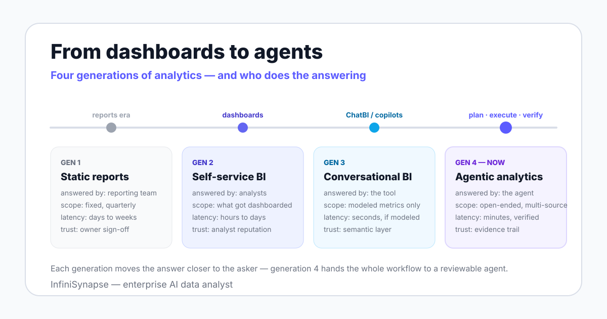

The word "agentic" carries a specific technical meaning, not a marketing one. Anthropic's Building Effective Agents defines agents as systems where the LLM dynamically directs its own processes and tool usage, rather than following a fixed script.
Two 2025 academic surveys — LLM/Agent-as-Data-Analyst and A Survey of Data Agents — now treat this as a distinct research area. If you want the system-level view of what such an agent is, start with our guide to what a data agent is; this page covers the analytics workflow it enables.
Analytics has shifted who does the work three times. Each generation moved the answer closer to the person asking, and each changed what "trust" means.

| Dimension | Static reports | Self-service BI | Conversational BI (ChatBI / copilots) | Agentic analytics |
|---|---|---|---|---|
| Who asks | Executives, via IT tickets | Analysts building dashboards | Any user, in natural language | Any user, in natural language |
| Who answers | The reporting team | The analyst who built the view | The tool, within pre-modeled metrics | The agent, with a reviewable plan |
| Question scope | Fixed, decided quarterly | Whatever got dashboarded | Single-turn, semantic-layer only | Open-ended, multi-step, cross-source |
| Latency to answer | Days to weeks | Hours to days | Seconds, when the metric exists | Minutes, including verification |
| Trust mechanism | Sign-off by the report owner | The analyst's reputation | The semantic layer's correctness | The evidence trail: plan, queries, checks |
Gartner coined augmented analytics in 2017 to describe AI features layered onto BI: auto-insights, natural language summaries, suggested charts. Augmentation assists a human-driven workflow; agentic analytics hands the workflow to the agent under review — the full contrast is in our AI-native vs augmented analytics comparison.
Single-shot query generation hit a ceiling that benchmarks made visible. On BIRD, human engineers reach 92.96% execution accuracy and models still trail that bar; on Yale's earlier Spider benchmark the same pattern held.
The research response was not bigger prompts but loops. The ReAct paper (2022) showed that interleaving reasoning with actions reduces error versus direct generation — the architectural seed of every agentic analytics system shipping today.
Strip away the branding and four properties separate an agentic system from a chat interface. A tool missing any one of them belongs in an earlier generation.
The agent receives an objective and drafts a multi-step plan: sources, joins, time windows, output format. In InfiniSynapse this is an explicit Plan mode — the agent proposes the plan, you review or adjust it, and only then does it execute.
Planning is what lets the system handle questions nobody modeled in advance. A single-turn tool can only re-ask your question against what already exists.
An agent executes against more than one system: warehouses such as Snowflake, databases such as PostgreSQL and MySQL, uploaded CSV and Excel files, document knowledge bases, and the web. InfiniSynapse routes cross-source work through InfiniSQL, an LLM-optimized intermediate representation that connects to a multi-source execution layer, so a join across two platforms and a file does not require an ETL project first.
The agent checks its own output before you see it: row-count plausibility after joins, null rates on key columns, recomputing a metric through a second path. A failed check sends the agent back to re-plan — the loop pattern ReAct formalized, and the property our autonomous data agent guide treats in depth.
The output is the answer plus the plan, the queries, the sources touched, and the caveats. That evidence trail is what makes a result reviewable by someone who did not run it — the core argument of explainable AI data analysis.
Abstract properties are easy to claim, so here is one realistic question walked through the whole loop: "Why did repeat purchases drop in East China last quarter?" No dashboard answers this, because nobody pre-built a "repeat purchase decline by region" view.
The agent drafts an analysis plan: define "repeat purchase" from the metric dictionary, pull regional order data, segment by cohort, compare against the prior two quarters, and check channel mix as a candidate driver. In InfiniSynapse's Plan mode this plan appears as an editable document — you can strike a step, change the time window, or add a segment before anything runs.
Before executing, the agent retrieves business context through LLM-Native RAG: the data dictionary entry for repeat purchase, the schema of the order tables, and any past analyses of the East China region. You see which definitions it cited — which is exactly where a wrong 7-day versus 30-day definition gets caught.
The agent runs the plan across whatever the question spans: the orders database, a regional CSV export, possibly a second platform's data. You see each query and source as it executes, inside read-only permissions you granted.
The agent checks row counts against expectations, inspects null rates on the join keys, and recomputes the headline decline through a second aggregation path. A failed check visibly sends it back to step 1 with a revised plan, rather than shipping a confident wrong number.
You get a finding, not a table dump: repeat purchases fell, concentrated in which cohort, coinciding with which channel change, with the queries and definitions attached. The deliverable can extend to an Excel file or a slide deck through the Agent Tool Market.
The five steps compress days of analyst queue time into minutes — but the review points are the feature, not the speed.
Vendors describe agentic BI as a binary you either have or lack. In practice it is a ladder, and knowing your rung tells you what to fix next.
| Level | What it looks like | Who does the analysis | You are here if... |
|---|---|---|---|
| L0 — Static reporting | Fixed reports on a fixed schedule | A reporting team, via tickets | New questions take a week and a meeting |
| L1 — Self-service BI | Dashboards business users can filter | Analysts build, users consume | Every new question becomes a new dashboard request |
| L2 — Conversational | Natural language over modeled metrics | The tool, inside its semantic layer | "Metric not found" is your most common answer |
| L3 — Supervised agentic | Agent plans and executes; humans review plans and exceptions | The agent, under plan review | You review investigations instead of running them |
| L4 — Autonomous with guardrails | Scheduled and triggered analyses run unattended within scoped permissions | The agent, within hard limits | Recurring analyses run themselves; humans handle escalations |
L3 is where agentic analytics starts in earnest, and it is where InfiniSynapse's Plan mode operates: the agent owns execution, you own approval. L4 is a governance decision more than a technology one — the autonomy levels, guardrail checklist, and failure cases are the subject of our autonomous data agent guide.
The label is being applied to products that do not meet it. Three specific non-examples keep evaluations honest.
A chat box that translates your question into a filter on an existing dashboard is conversational BI — generation three, and useful as such. The test from our data agent vs AI copilot comparison applies: if it cannot show you an editable plan and run new analysis, it is a copilot, not an agent.
Agentic does not mean unattended. Production deployments keep approval gates for new question types and read-only credentials by default — the system directs its own process, within boundaries you set.
An agent retrieves the definitions you give it; it cannot arbitrate a fight over who owns "active user". Teams sometimes adopt augmented features expecting governance for free, and the gap is the same here — see AI-native vs augmented analytics for where each approach actually helps.
Not every analytics task deserves an agent. These six are where the agentic workflow earns its cost, with the honest reason why.
| Use case | What the agent does | Why an agent beats a dashboard here |
|---|---|---|
| Revenue diagnosis | Decomposes a revenue change by region, product, channel, and cohort | The driver combination is unknown in advance — no dashboard pre-computes every cut |
| Cohort investigation | Defines, builds, and compares cohorts on the fly from raw orders | Cohort logic changes per question; dashboards freeze one definition |
| Competitor monitoring | Collects public pricing and listing data via Browser Use, then joins it to internal data | Dashboards cannot collect external web data at all |
| Cross-platform reconciliation | Joins JD and Tmall platform data with a CSV by phone number — a documented InfiniSynapse demo | Cross-source joins normally require an ETL project before the first chart |
| Anomaly explanation | Investigates a metric spike: when it started, which segment, what changed | A dashboard shows the spike; it cannot run the follow-up questions |
| Text-field analysis | Runs LLM analysis over text columns, such as sentiment on customer comments, alongside structured metrics | BI tools aggregate numbers; they do not read free text |
This is the section vendor pages skip, so read it as our disclosure in practice. An agent amplifies the data foundation you already have — including its defects.
The agent's accuracy ceiling is your knowledge base: data dictionaries, metric definitions, analysis playbooks, past cases. Budget real hours for seeding it, and expect early answers to expose where definitions were silently inconsistent — how that context layer compounds over time is covered in data agent memory explained.
If two teams compute "churn" differently, the agent will faithfully automate the disagreement. Assign one owner per core metric before the pilot, not after the first contested number.
Grant read-only credentials scoped to what the agent needs, log every query, and review plans for new question types. The NIST AI Risk Management Framework (2023) structures this as govern, map, measure, and manage — a vocabulary your security team already speaks.
If you operate in the EU, note that the EU AI Act entered into force on 2024-08-01 with obligations phasing in through 2026-2027. An evidence trail per analysis is the cheapest compliance asset you can build now.
Teams with no connected sources, no agreed definitions, or a purely static reporting need should fix those first — classic BI or a governance effort will return more than any agent, ours included. The case for making the jump when you are ready is argued in the Data Agent Manifesto.
Connect a database or upload a file, ask a "why did X change?" question, and review the plan, the execution trail, and the verification steps. One supervised run tells you which maturity level your team is actually ready for.
Try InfiniSynapse onlineLast updated: 2026-06-12 · Next scheduled review: 2026-09-12
Definitions are grounded in published agent research (ReAct, the 2025 data agent surveys), public benchmarks (BIRD, Spider), category definitions (Gartner), and governance frameworks (NIST AI RMF, EU AI Act). Capabilities attributed to InfiniSynapse come from product documentation; the cross-platform reconciliation example is a documented product demonstration, not an independent benchmark.
Conflict of interest: InfiniSynapse publishes this guide and sells in this category. To reduce bias, the page includes a vendor-neutral generation table and maturity model, explicit non-examples, and a prerequisites section that tells some readers not to buy yet.
Update cadence: Reviewed every 90 days for terminology, source links, benchmark figures, and schema consistency.